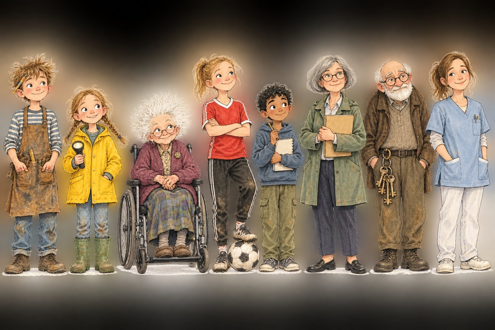
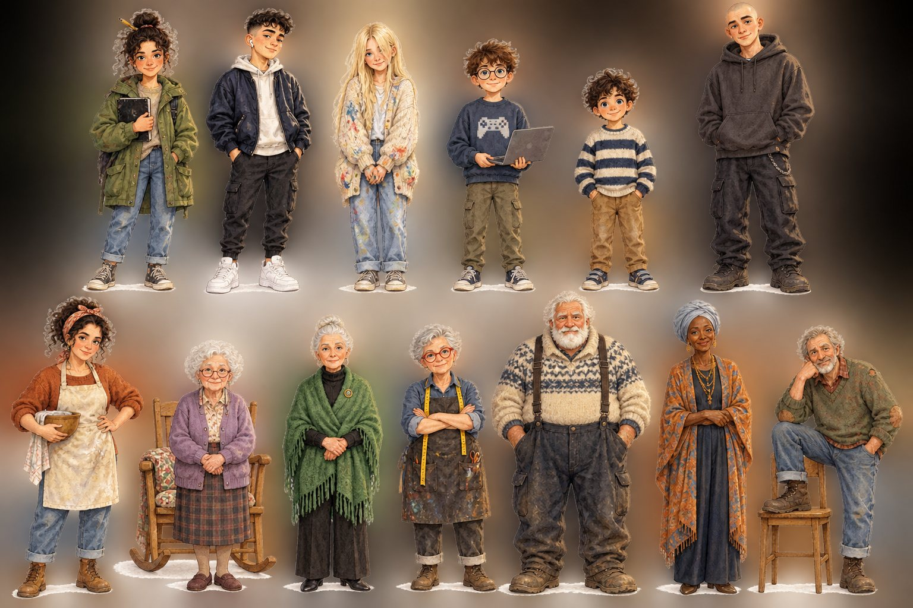
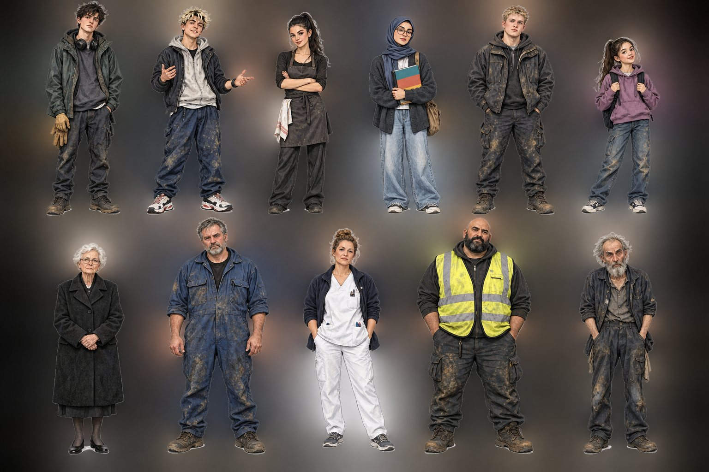

Internt, för granskning
Alla karaktärer
Så granskar du: tryck på en bild för full storlek. Skriv vad du vill ändra per karaktär (namn + ändring), så gör jag om just dem. Alla karaktärer i Penny-världen, även Penny, är nya (v2) i samma stil som omslagen. Fäll ut "Visa gamla designen" för att se skillnaden. Ben, Maya och Alex är nu också v2 i samma sagobokstil, med de gamla arken utfällbara under varje serie. Uppdaterat: alla har nu egna frisyrer.
Penny and the Golden Notebook (7–10) och Penny and the Seed (3–6)
Ben och Uppfinnarens karta (7–10)
Visa gamla karaktärsarket för Ben och Uppfinnarens karta

Maya och Tornets utmaning (11–14)
Visa gamla karaktärsarket för Maya och Tornets utmaning

The Condition / Villkoret (15–18)
Visa gamla karaktärsarket för The Condition / Villkoret
